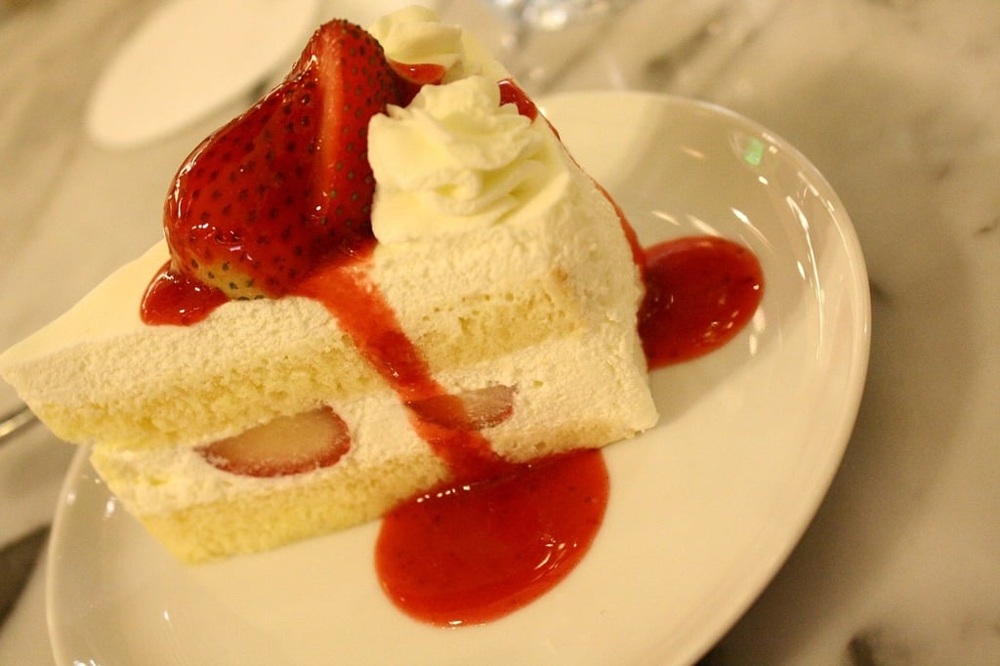

Old-Fashioned Shortcake

Description
A classic dessert with macerated strawberries on top of a shortcake with whipped cream topping. The dessert emphasizes the sweetness and juiciness of strawberries
Ingredients
- 2 cups all-purpose flour
- 1 cup white sugar
- 4 teaspoons baking powder
- 1/2 teaspoon salt
- 1/4 teaspoon ground nutmeg (Optional)
- 1/2 cup cold butter, cubed
- 1/3 cup milk
- 1 large egg
Steps
- Preheat the oven to 450 degrees fahrenheit (230 degrees celsius). Grease an 8-inch baking pan
- Sift flour, sugar, baking powder, salt, and nutmeg together in a large bowl. Cut in butter with 2 knives or a pastry blender until the mixture resembles coarse crumbs. Add the milk and eggs to a small bowl and beat them together. Stir it into the flour mixture until batter is just blended. Spread the batter evenly into your prepared baking pan
- Once preheated, bake it in the oven for 15 minutes or until golden. Let it cool in the pan for about 10 minutes before removing to cool completely on a wire rack.
Homepage